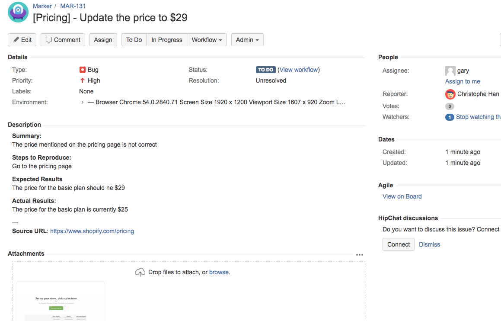

Bug Reports¶
A bug report is a way to inform developers about unexpected behavior in software. It can also be seen as a software test written in natural language. The way to write a bug report is directly related to the resolution of a bug.
Writing a good bug report¶

Can this problem be solved? Certainly yes, but it is clear that information that would be essential for the resolution is missing.
A bad bug report is never resolved.
This, perhaps, is the great motivation for writing good bug reports. Although they have different ways of writing, there are essential elements:
Descriptive Title
The title should be clear, descriptive and 3 questions must be answered:
What is the problem?
How did it happen?
Where did it occur?
A clear title makes the bug report easier to find and helps identify duplicates.
Details of the Environment
This part should include all the details about the environment setup and configuration on which the app is running and should assist in identifying incompatibilities with the presented system.
Steps to Reproduce
The minimum steps needed to reproduce the bug and must be clear so that others can reproduce the error consistently.
Expected Result
This is the result or output that was expected or intended. This allows the developer to assess whether the report is not a misunderstanding by the user about the functionality of the application.
Actual Result
This is the result or output observed by the user. Once the error was reproduced and the outputs were similar, then those responsible for the code are already prepared for resolution.
In a few words, a bug report should be reproducible, specific, and informative, to explain the bug and help developers. The example below covers the presented topics.

Some companies have their guidelines dedicated to instructing their bug reporters. Some of the best known below:
Bug Tracking System¶

In large systems, it is very common to use tools like Jira, Bugzilla, Redmine, or Mantis to manage bug reports. These tools are known as bug tracking systems and store reported bugs in an organized manner, allowing team testers to document errors, define priorities, and assign reports. The following image shows a bug reported in Jira.

Some of them integrate with other software development tools, such as Jenkins, Github, and Trello. In addition to facilities for developers, end users are in many cases allowed to submit bugs directly. Therefore, a bug tracking system is usually a necessary component of a professional software development infrastructure, and its consistent use is considered one of the hallmarks of a good software team.
References¶
Peham, T. (n.d.). What is a bug report? The ins and outs of bug reports [Blog post]. Retrieved from https://usersnap.com/blog/what-is-a-bug-report
Abul-Ezz, S. (2018, January 16). How to Write a Bug Report: The Ideal Bug Report [Blog post]. Retrieved from https://instabug.com/bloghow-to-write-a-bug-report-the-ideal-bug-report
Sviatoslav A., Elena K. (n.d.). How to Write a Bug Report [Blog post]. Retrieved from https://rubygarage.org/blog/how-to-write-a-quality-bug-report
(2020, August 1). How To Write A Good Bug Report? Tips And Tricks. Retrieved from https://www.softwaretestinghelp.com/how-to-write-good-bug-report
(n.d.). Bug tracking system. Retrieved from https://en.wikipedia.org/wiki/Bug_tracking_system